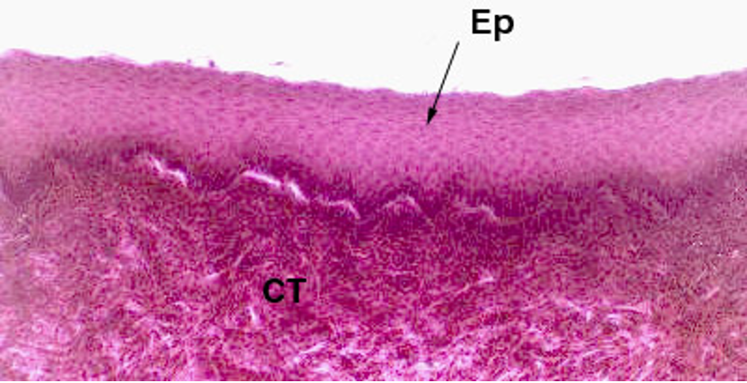
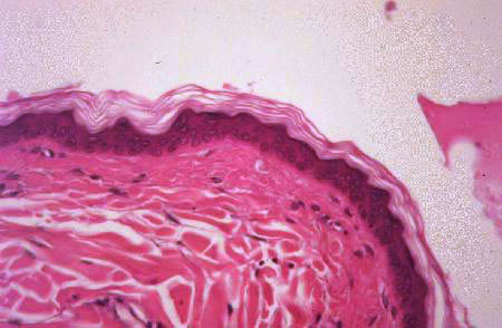
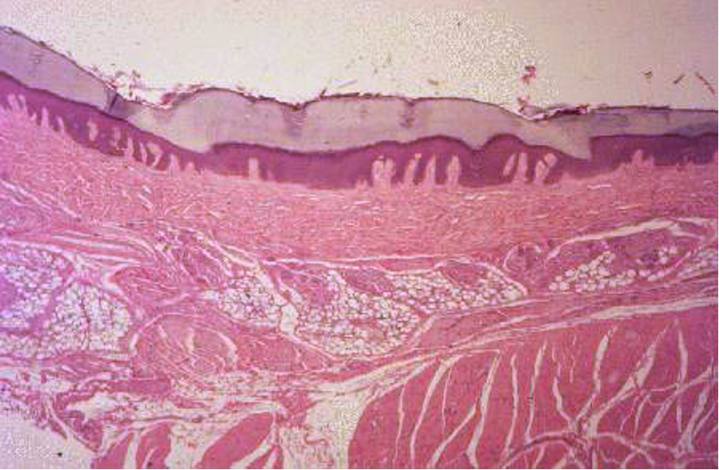
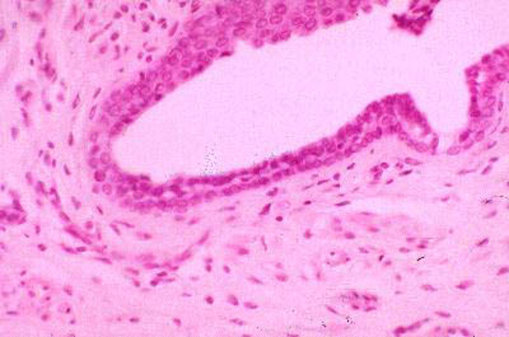

Voorbeelden meerlagige epithelen
Dit is een mooi voorbeeld van meerlagig plaveiselepitheel dat niet verhoornd is. De cellen van de bovenste laag zijn sterk afgeplat maar bezitten allemaal nog een duidelijke (niet pycnotische) kern. De basale laag (= stratum basale) rust op de basaalmembraan.

Mondholte, epitheel van het tandvlees; HE kleuring, paraffinecoupe, 200x
Vaak is meerlagig plaveiselepitheel verhoornd, dat wil zeggen dat de buitenste lagen bestaan uit afgestorven cellen. Vaak schilferen deze cellen af, wat normaal is voor bijvoorbeeld het meerlagig plaveiselepitheel van de huid.

Huid van de hond; HE kleuring, paraffinecoupe, 400x
Verhoorning kan uitermate sterk aanwezig zijn aan oppervlakken die onderhevig zijn aan zware sleet en wrijving, zoals handpalmen en voetzolen. In dat geval zijn de bovenste cellagen sterk verhoornd.

Zoolkussentje van de kat; HE kleuring, paraffinecoupe, 200x
Deze dia toont een grote afvoergang van de melkklier. We zien duidelijk dat het epitheel van deze buis uit twee cellagen bestaat waarvan de bovenste kubisch epitheel is. Het is dus een voorbeeld van meerlagig kubisch epitheel.

Melkklier van de hond, H&E-kleuring, paraffinecoupe, 400x